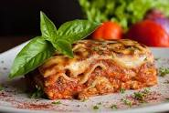

lasagne

What is lasagne
Lasagne is a classic Italian dish that consists of layers of pasta, rich meat sauce, and creamy béchamel sauce, all baked to perfection. This hearty and comforting dish is a favorite among pasta lovers and is perfect for feeding a crowd or enjoying as leftovers.
ingredients
- lasagne noodles
- Ground beef or Italian sausage
- chopped onion
- minced garlic
- Tomato sauce
- italian seasoning
- salt and pepper
- Ricottacheese
- Parmesan cheese
- mozzarella cheese(optional)
- fresh basil leaves
- veggies like bell peppers/mushrooms could be added
directions
- Preheat the oven to 375°F (190°C).
- Cook the lasagne noodles according to the package instructions. Drain and set aside.
- In a large skillet, cook the ground beef or Italian sausage over medium heat until browned. Add chopped onion and minced garlic and cook until the onion is translucent.
- Add the tomato sauce, diced tomatoes, tomato paste, Italian seasoning, salt, and pepper to the skillet. Simmer for about 10 minutes, stirring occasionally.
- In a separate bowl, mix together the ricotta cheese, grated Parmesan cheese, and chopped fresh basil.
- Spread a thin layer of the meat sauce in the bottom of a baking dish. Arrange a single layer of lasagne noodles on top.
- Spread a layer of the ricotta cheese mixture over the noodles, followed by a layer of meat sauce. Sprinkle shredded mozzarella cheese on top.
- Repeat the layering process, ending with a layer of meat sauce and shredded mozzarella cheese on top.
- Cover the baking dish with foil and bake in the preheated oven for 25 minutes.
- Remove the foil and bake for an additional 10-15 minutes, or until the lasagne is bubbly and the cheese is golden brown.
- Remove from the oven and let it cool for a few minutes before serving.